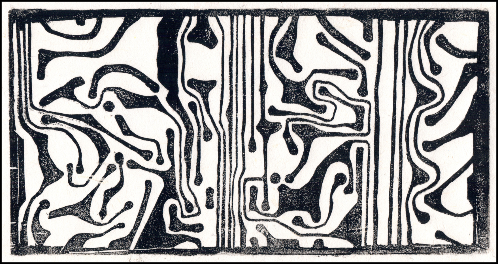

▼ Graphic Self-Portrait

▼ Ezi's Sewer

Ezi.Zhang
抑子
Based in Shanghai
现居上海
Ezi.Zhang is a versatile artist whose primary creative mediums include mixed-media painting, printmaking, 3D, generative art, and sound. In the process of absorbing various types of information, Ezi collects elements that trigger their synesthesia as pigments, and then engages in re-creation within the realm of soul memory. This is the process of Ezi's self and its visualization. 抑子是以综合材料绘画、版画、3D、生成艺术、声音为主要创作媒介的多元化艺术家。在摄取各种信息的过程中，采集触发自己联觉的元素来作为颜料然后进行灵魂记忆里的再创作，这是抑子自我与图像化的过程。

Visual
Video Work
视觉
影像作品
Rasterize Series 光栅化系列
Anti-Human Series 反人类系列


♫


Digital Painting 数字绘画
Rubbing
Woodcut
Stone Carving
拓印
木刻
石刻
The Signifer Relic Series 提示符系列
R.G.B. Star History Series R.G.B. 星史系列
Tangential 题外话

Mixed Media 综合材料
Mixed Media on Canvas
综合材料绘画

Ongoing Optimization & Updates